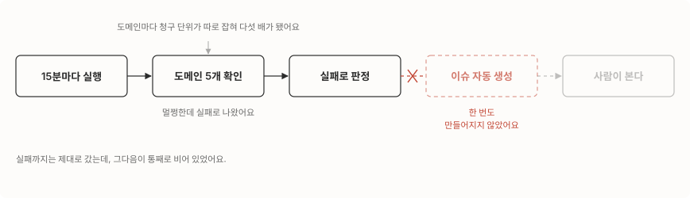

이번 달 요금이 47달러였어요
이번 달 사용량 화면을 열었더니 GitHub Actions에 47달러가 찍혀 있었어요. 제가 관리하는 저장소는 PR과 머지 때만 도는 검사가 대부분이라 요금이 붙을 일이 거의 없거든요. 이 47달러가 어디서 나왔는지부터 찾아봤어요.
먼저 결론부터요.
- 15분마다 도메인 다섯 개에 요청을 보내던 감시 워크플로우 하나가 이 47달러를 혼자 썼어요.
- 그런데 최근 100번 중 92번이 실패였고, 실패를 알리는 이슈는 0건이었어요. 감시가 돌기만 하고 사람한테는 안 닿고 있었죠.
- 실패도 진짜 장애가 아니었고, 감시 목록에 운영 도메인은 하나도 없었어요. 그래서 고치지 않고 지웠어요.

작업이 다섯 개로 쪼개지고 1분씩 올라갔어요
이번 달 실행 기록을 실행 단위로 세어봤어요. 26일 동안 1,777번이었는데 PR·머지 검사가 213번이고, 나머지 1,560번 남짓이 전부 이 감시 워크플로우 하나였어요. 하루 60번꼴이에요. 15분 주기면 하루 96번이어야 하는데, GitHub이 예약 실행을 종종 건너뛰거든요.
워크플로우를 열어보고 알았어요. GitHub Actions에서 워크플로우가 한 번 돌면 그 안이 다시 ‘작업(job)‘으로 나뉘는데, 요금은 실행이 아니라 이 작업 단위로 붙어요. 그런데 제 워크플로우는 확인할 도메인 목록을 하나씩 작업으로 펼치는 설정을 쓰고 있었거든요.
strategy:
matrix:
endpoint:
- { name: ..., url: ..., expected: '200' }
# 다섯 개도메인이 다섯 개니까 실행 한 번이 청구 대상 다섯 개가 됐어요. 여기에 규칙이 하나 더 겹쳤어요. 작업 하나가 몇 초를 썼든 분 단위로 올려서 청구되거든요. 요청 한 번 보내고 끝나는 5초짜리 확인도 1분이에요.
| 워크플로우 주석의 추산 | 실제 | |
|---|---|---|
| 계산 근거 | 확인 1회 5초 × 하루 96회 × 30일 | 실행 1,560여 회 × 작업 5개, 작업마다 1분 올림 |
| 한 달 | 약 6분 | 약 7,800분 |
| 요금 | 무료 한도(월 2,000분) 안 | 한도를 넘긴 5,800분 × 분당 0.008달러 = 46달러 남짓, 화면엔 47달러 |
주석에는 “한 달 6분, 무료 한도 안에서 무시 가능”이라고 적혀 있었어요. 제가 그렇게 적어뒀고요. 그런데 그 6분조차 자기 식을 그대로 곱하면 240분이 나와요. 작업이 다섯 배로 쪼개지는 것도, 5초가 1분으로 올라가는 것도 빼먹은 데다 곱셈까지 틀렸던 거예요.
더 나빴던 건 감시가 사람한테 닿은 적이 없다는 거예요
요금만 문제였다면 작업을 하나로 합쳐서 고쳐 쓰면 됐어요. 그런데 실행 이력을 넘겨보다 더 이상한 걸 봤어요.
- 최근 100번 중 92번이 실패인데 이 워크플로우가 만든 이슈는 0건이었어요. 실패하면 이슈를 자동으로 만들고, 같은 대상의 이슈가 열려 있으면 댓글을 다는 코드가 분명히 있었는데도요.
- 그 실패는 가짜였어요. 목록에 있던 다섯 곳에 제 자리에서 직접 요청해보니 전부 정상이었고, 워크플로우가 기대값으로 적어둔 응답 코드와도 맞았어요. 확인을 돌리던 GitHub 쪽에서만 응답을 못 받은 걸로 보여요.
- 원인 둘은 못 짚었어요. GitHub 쪽에서 왜 막혔는지, 이슈가 왜 한 건도 안 만들어졌는지요. 지울 워크플로우라 거기서 멈췄어요.
고치는 대신 지웠어요
지우기 전에 살릴 방법 두 개를 재봤어요.
- 작업을 하나로 합친다. 기각했어요. 반복문으로 돌리면 1,500분대로 내려가 무료 한도 안에 들어와요. 요금은 사라지지만 92번 실패의 원인은 그대로 남고요.
- 주기를 늘린다. 기각했어요. 알림이 안 나가는 감시라 자주 돌든 드물게 돌든 결과가 같아요.
결정적인 건 감시 대상이었어요. 목록에 있던 다섯 개 중 넷은 개발 환경 도메인이고 하나는 개발·운영이 함께 쓰는 관리 도구라, 운영 서비스 도메인은 하나도 없었어요. 운영에서 사고가 나도 이 워크플로우는 처음부터 아무 말도 하지 않는 구조였던 거예요.
저장소 문서의 “사고 방어 3단계” 표도 2단계로 고쳤어요. 돌지도 않는 방어를 있다고 적어두면 다음 사람이 그걸 믿으니까요.
지운 뒤에 세 가지를 봤어요.
- 기본 브랜치에 워크플로우 파일이 남지 않았는지 (주기 실행은 기본 브랜치 파일만 도니까요)
- 남은 워크플로우에 주기 실행 설정이 없는지
- GitHub이 인식하는 워크플로우 목록에서도 빠졌는지
다음 실행 시각을 넘겨보고 새 실행이 없는 것까지 확인했고요.
다음엔 알림이 오는 것까지 보고 마치려고요
주기적으로 도는 자동화는 만든 시점이 아니라 알림이 도착하는 걸 본 시점에 완성되더라고요. 다음엔 일부러 실패를 한 번 내서 알림이 오는 것까지 보고 마치려고요. 요금도 실행 횟수만 세지 않고 작업이 몇 개로 쪼개지는지를 같이 보려고요. 도메인이 살아 있는지 보는 정도는 전용 무료 서비스가 낫겠다 싶어, 이번엔 대체 감시를 세우지 않고 비워뒀어요.